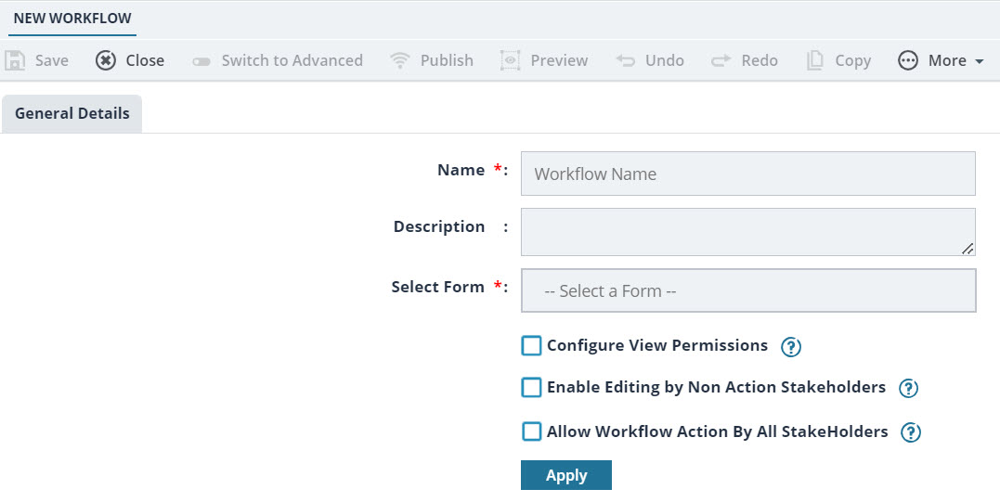
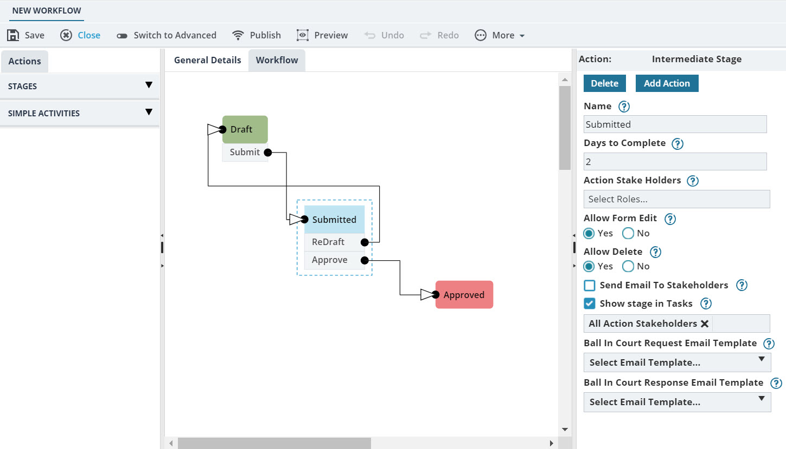
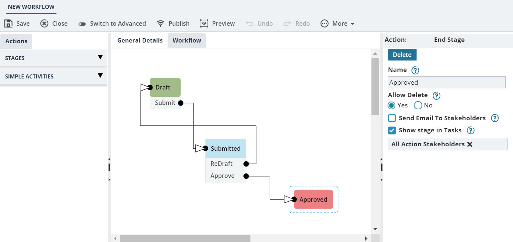

Creating a Workflow
- The role of the logged in user has permission to create the workflow. For information on permissions, refer to Managing Permissions.
The Project Fund Transaction form is used for the sample workflow.
-
In the module menu, click Administration.
The ADMINISTRATIONS page is displayed.
-
In the navigation pane, expand Configuration Toolkit, and then click Workflow Management.
The WORKFLOW LIST page is displayed.
-
Click New.
The NEW WORKFLOW page is displayed.
Figure 1. New Workflow  -
To add information about the workflow, in the General Details tab, perform the following steps:
- In the Name box, enter the name of the workflow.
- In the Description box, enter a description of the workflow.
-
From the Select Form drop-down list, select the form for which the workflow is being created.
Alternatively, type the name of the form, and then select the required form.The options available are all forms available in the application.For example, to create a workflow for Project Fund Transaction, select Project Fund Transaction form from the Select Form drop-down list. To create a new business process, the first step is to create the form, and then create the workflow. For information creating a form, refer to Creating a Form Using Form Builder.
-
To select stakeholders who can view records in a stage but not perform any workflow actions, select the Configure View Permissions check box.
For example, you can enable this check box when you want to specifically allow or deny view of the record to a user role at any stage of the workflow.Note:
- During the workflow creation, you can view the View Stake Holdersbox only if the Configure View Permissions check box is selected in the General Details tab.
- You cannot select or clear the Configure View Permissions check box after clicking Apply in the General Details tab.
- If the user role is not an action stakeholder and is not selected in the View Stake Holders box, then that user role cannot view the record on thelist page of the form selected in theSelect Form drop-down list.
-
To enable the users who have Edit permission on the form to edit the record, even if they are not action stakeholders, select the Enable Editing by Non Action Stakeholders check box.
For example, you can select this check box when you want a non-action stakeholder with Edit permission at the form level to edit the record at any workflow stages.Note:
- You can select or clear the Enable Editing by Non Action Stakeholders check box at any time while creating or while editing the workflow.
- The non-action stakeholders with Edit permission at the form level can only edit the record and cannot perform workflow action.
-
To enable all the stakeholders who have edit or view or both permissions on the form to perform workflow actions, select the Allow Workflow Action by All Stakeholders check box.
For example, you can enable this check box when you want a user role to only perform workflow action without editing the record.Note:
- You can select or clear the Allow Workflow Action by All Stakeholders check box at any time while creating or while editing the workflow.
- Selecting Allow Workflow Action by All Stakeholders check box lists all the roles having edit or view or both permissions at the form level in the Action Stake Holders drop-down list.
-
Click Apply.
A pre-created three-stage workflow is displayed in the Workflow tab. By default, the workflow is created in simple mode.
-
To configure the properties for a start stage, such as the Draft stage, in the Workflow tab, perform the following steps:
-
Click the Draft stage.
The Draft stage properties are displayed in the right pane, as illustrated in the following image:
Figure 2. Workflow Draft 
-
In the Start Stage properties pane, provide the required information in the fields, as described in the following table:
Field Name Description Name Enter the name of the stage. the default stage name is displayed as Draft. If required, enter a new name for the stage.
Days to Complete Enter the number of days before which an action must be performed in the current workflow stage. If the stakeholder does not perform an action in the specified number of days, an escalation email is sent to users in the Administrator role.
By default, the number of days defined in the WORKFLOW SETTINGS page is displayed. For information on workflow settings, refer to Administration, Workflow Settings.
Action Stake Holders Select the roles with which a user can perform the workflow action for the stage. The Action Stake Holder box lists all the roles that are assigned with theEdit permission at the form level. For information on roles, refer to Security Roles. Also, if Allow Workflow Action by All Stakeholders is selected in the General Details tab, then all stakeholders with theEdit or View or both permissions at the form level are listed in the Action Stake Holders drop-down list.
Note:- For a role to be available in the list of action stakeholders, the Edit permission must be enabled for the role at the form level. To modify permissions, refer to Editing Role Information.
- Ensure that the stakeholders selected in the Action Stake Holders box are also selected in the View Stake Holders box.
View Stake Holders Select the roles with which a user can view the records that are in the workflow stage but not perform any workflow actions. The View Stake Holders box lists all the roles that are assigned with View permission at the form level. For information on roles, refer to Security Roles. Note:- You can view the View Stake Holders box only if the Configure View Permissions check box is selected in the General Details tab.
- If the role is not selected in the View Stake Holders box, then that role cannot view the record in the selected form list page.
Allow Delete Click Yes, to allow the users to delete the record in this stage. Click No, to restrict the users from deleting the record in this stage.
Send Email To Stakeholders Select the check boxto send a standard automated email notification to the action stakeholders of the subsequent stage whenever the workflow action is performed. The email template is based on the default template selected in the WORKFLOW SETTINGS page. For information on workflow settings, refer to Administration, Workflow Settings.
Show stage in Tasks Ensure the check box is selected, to list the subsequent workflow action in the My Tasks list of all stakeholders of the subsequent workflow stage. Ball In Court Request Email Template Select the required email template to be used to send an automated notification to the user selected to receive form information using the Ball in Court feature. Available templates are based on the form that is selected for the workflow.
Available options are templates defined for the form in the Mail Body Templates catalog of the Library. For information on the Ball in Court feature, refer to Common Application Features, Ball in Court.
Ball In Court Response Email Template Select the required email template to be used to send an automated response notification to the user who initiated the Ball in Court notification. Available templates are based on the form that is selected for the workflow.
Available options are templates defined for the form in the Mail Body Templates catalog of the Library. For information on the Ball in Court feature, refer to Common Application Features, Ball in Court.
-
Click the Draft stage.
-
To configure the properties for an intermediate stage, such as Submitted stage, perform the following steps:
-
In the Workflow tab, click the Submitted stage.
The Submitted stage properties are displayed in the right pane, as illustrated in the following image:
Figure 3. Workflow Submitted  -
In the Intermediate Stage properties pane, provide the required information in the fields, as described in the following table:
Field Name Description Name Enter the name of the stage. the default stage name is displayed as Submitted. If required, enter a new name for the stage. Days to Complete Enter the number of days before which an action must be performed in the current workflow stage. If the stakeholder does not perform an action in the specified number of days, an escalation email is sent to users in the Administrator role.
By default, the number of days defined in the WORKFLOW SETTINGS page is displayed. For information on workflow settings, refer to Administration, Workflow Settings.
Action Stake Holders Select the roles with which a user can perform the workflow action for the stage. The Action Stake Holder box lists all the roles that are assigned with the Edit permission at the form level. For information on roles, refer to Security Roles. Also, if Allow Workflow Action by All Stakeholders is selected in the General Details tab, then all stakeholders with the Edit or View or both permissions at the form level are listed in the Action Stake Holders drop-down list.
Note:- For a role to be available in the list of action stakeholders, the Edit permission must be enabled for the role at the form level. To modify permissions, refer to Editing Role Information.
- Ensure that the stakeholders selected in the Action Stake Holders box are also selected in the View Stake Holders box.
View Stake Holders Select the roles with which a user can view the records that are in the workflow stage but not perform any workflow actions. The View Stake Holders box lists all the roles that are assigned with View permission at the form level. For information on roles, refer to Security Roles.
Note:- You can view the View Stake Holders box only if the Configure View Permissions check box is selected in the General Details tab.
- If the role is not selected in the View Stake Holders box, then that role cannot view the record in the selected form list page.
Allow Form Edit Click Yes, to allow the user to edit the record in this stage. Click No, to restrict the users from editing the record in this stage.
Allow Delete Click Yes, to allow the users to delete the record in this stage. Click No, to restrict the users from deleting the record in this stage.
Send Email To Stakeholders Select the check box, to send a standard automated email notification to the action stakeholders of the subsequent stage whenever the workflow action is performed. The email template is based on the default template selected in the WORKFLOW SETTINGS page. For information on workflow settings, refer to Administration, Workflow Settings.
Show stage in Tasks Ensure the check box is selected, to list the subsequent workflow action in the My Tasks list of all stakeholders of the subsequent workflow stage. Ball In Court Request Email Template Select the required email template to be used to send an automated notification to the user selected to receive form information using the Ball in Court feature. Available templates are based on the form that is selected for the workflow.
Available options are templates defined for the form in the Mail Body Templates catalog of the Library. For information on the Ball in Court feature, refer to Common Application Features, Ball in Court.
Ball In Court Response Email Template Select the required email template to be used to send an automated response notification to the user who initiated the Ball in Court notification. Available templates are based on the form that is selected for the workflow.
Available options are templates defined for the form in the Mail Body Templates catalog of the Library. For information on the Ball in Court feature, refer to Common Application Features, Ball in Court.
-
In the Workflow tab, click the Submitted stage.
-
To configure the properties for an end stage, such as the Approved stage, perform the following steps:
-
In the Workflow tab, click the Approved stage.
The Approved stage properties are displayed in the right pane, as illustrated in the following image:
Figure 4. Workflow Approved  -
In the End Stage properties pane, provide the required information in the fields, as described in the following table:
Field Name Description Name Enter the name of the stage. the default stage name is displayed as Approved. If required, enter a new name for the stage. View Stake Holders Select the roles with which a user can view the records that are in the workflow stage but not perform any workflow actions. The View Stake Holders box lists all the roles that are assigned with View permission at the form level. For information on roles, refer to Security Roles.
Note:- You can view the View Stake Holders box only if the Configure View Permissions check box is selected in the General Details tab.
- If the role is not selected in the View Stake Holders box, then that role cannot view the record in the selected form list page.
Allow Delete Click Yes, to allow the users to delete the record in this stage. Click No, to restrict the users from deleting the record in this stage.
Send Email To Stakeholders Select the check box, to send a standard automated email notification to the action stakeholders of the subsequent stage whenever the workflow action is performed. The email template is based on the default template selected in the WORKFLOW SETTINGS page. For information on workflow settings, refer to Administration, Workflow Settings.
Show stage in Tasks Ensure the check box is selected, to list the subsequent workflow action in the My Tasks list of all stakeholders of the subsequent workflow stage.
-
In the Workflow tab, click the Approved stage.
-
Click Save.
The workflow is saved and listed on the WORKFLOW LIST page.
- Workflow using simple mode – Using the simple mode, you can customize apre-created workflow, and add the required additional stages, define conditions, validations, and so on.
- Workflow using advanced mode – Using the advanced mode, you can create a complex workflow. Advanced mode enables you to use advanced features, such as expressions, condition block, morph workflow, get form data, set form data, create new form, call form resource, set form status, set due date, set stake holders, and so on.